Blender 5.2 LTS / Geometry Nodes / EEVEE
リングを100本積んだ筒に、赤と青の光が下から昇ります。青は途中から加速して赤に追いつき、赤は筒の縁だけ光って黒いカプセルのような抜けをつくります。キーフレームは打ちません。
Result / 到達点
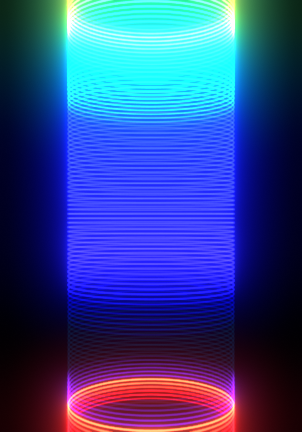
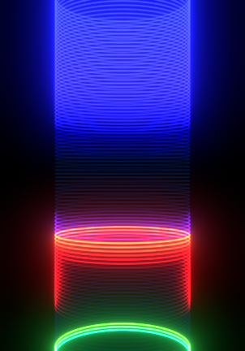
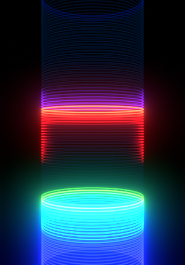
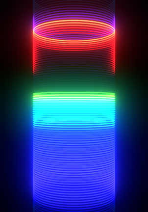
まだ何も出ていなくて正解。
メッシュライン → グループ出力
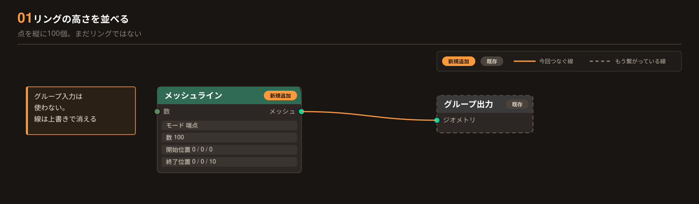
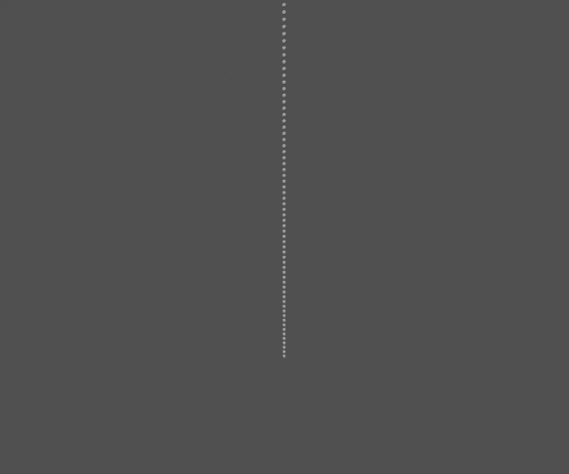
縦に1本の線に見えればOK。高さ 10m ぶん。
メッシュライン → ポイント ／ カーブ円 → インスタンス ／ ポイントインスタンス作成 → グループ出力
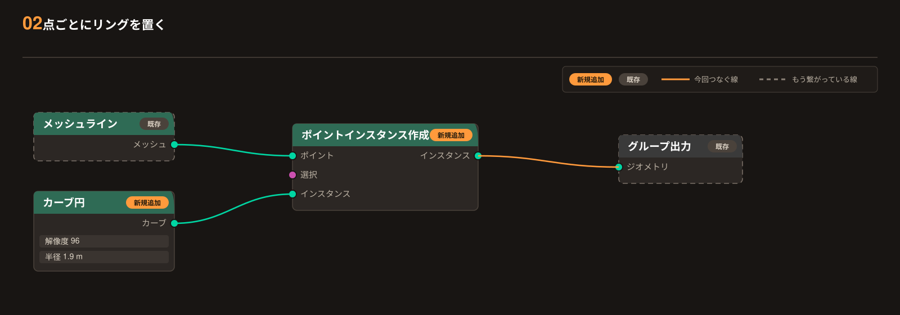
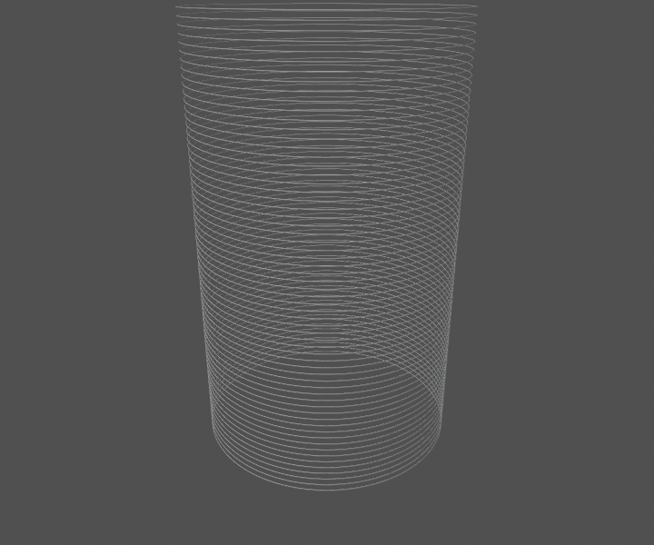
細い輪が100本、筒になる。
ポイントインスタンス作成 → 実体化 → グループ出力
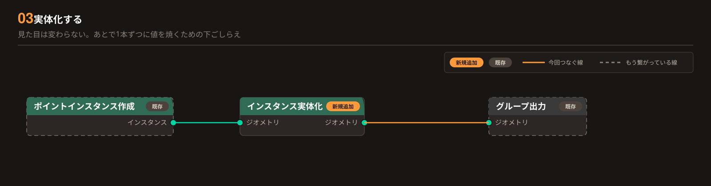
見た目は 02 と同じで正解。
実体化 → カーブ ／ 新しいカーブ円 → プロファイルカーブ ／ カーブのメッシュ化 → グループ出力
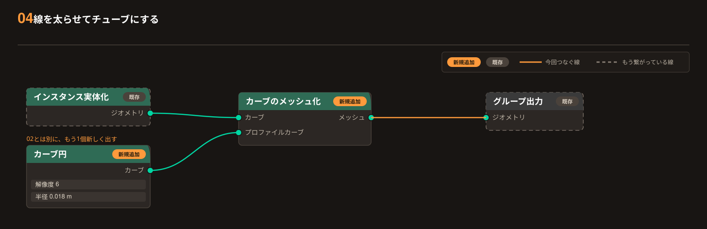
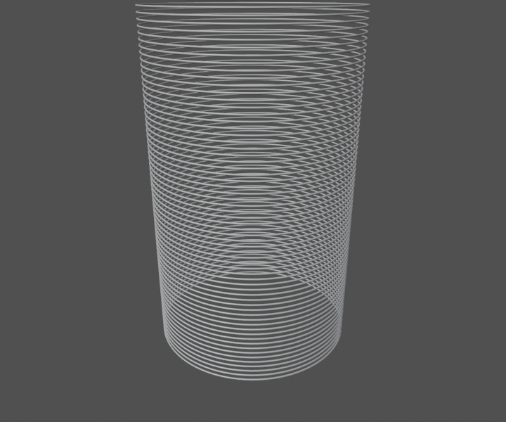
輪に太さが付く。ここで形は完成。
マテリアル LightPower を選んで → マテリアルタブ → 新規 → 名前 M_PowerSelect LightPower → Material Properties → New → Name M_Power
放射 → 加算 上 ／ 透過BSDF → 加算 下 ／ 加算 → マテリアル出力 サーフェス
ジオメトリノード
カーブのメッシュ化 → マテリアル設定（M_Power）→ グループ出力
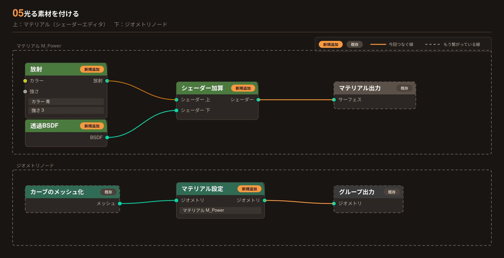
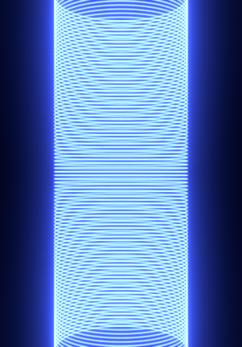
カメラビュー（テンキー0）＋ レンダープレビュー。青い筒が光ればOK。にじみが見えないときは ビューの右上 ビューポートコンポジット を ON。
phase_r を焼き付ける実体化 → 格納 → カーブのメッシュ化（間に割り込ませる） 小数部 → 格納の 値
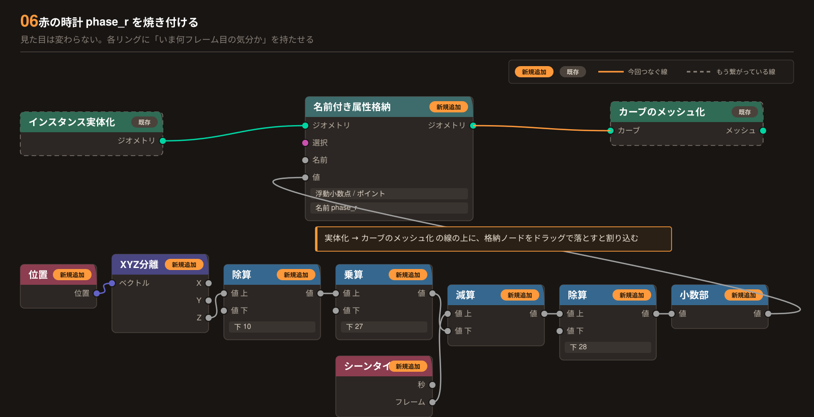
見た目は変わらなくて正解。スプレッドシートに phase_r の列が増えていればOK。
マテリアル
カラーランプ カラー → 放射 カラー（05 の青は上書きされる）Color Ramp Color → Emission Color
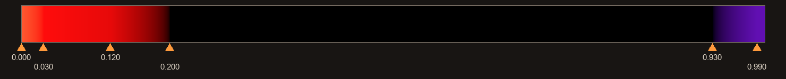
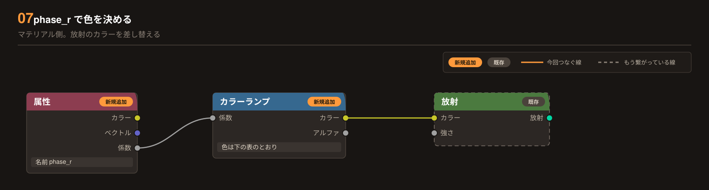
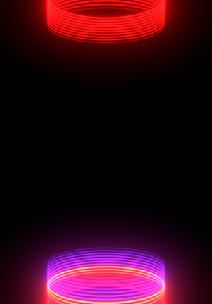
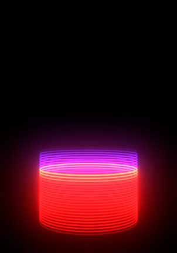
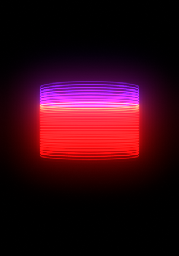
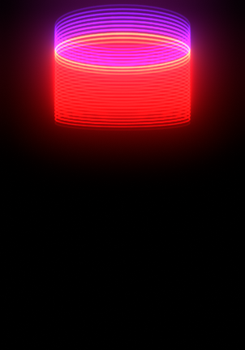
再生（スペース）で赤い帯が下から昇る。28フレームで1周。
phase_b（緩急つき）除算 ÷10 → フロートカーブ → コピーの乗算 ／ 格納 phase_r → 格納 phase_b → カーブのメッシュ化Divide ÷10 → Float Curve → Multiply / Store phase_r → Store phase_b → Curve to Mesh
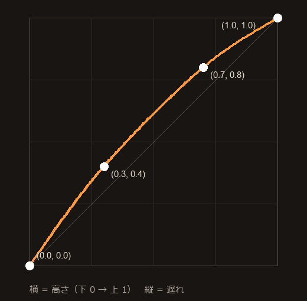
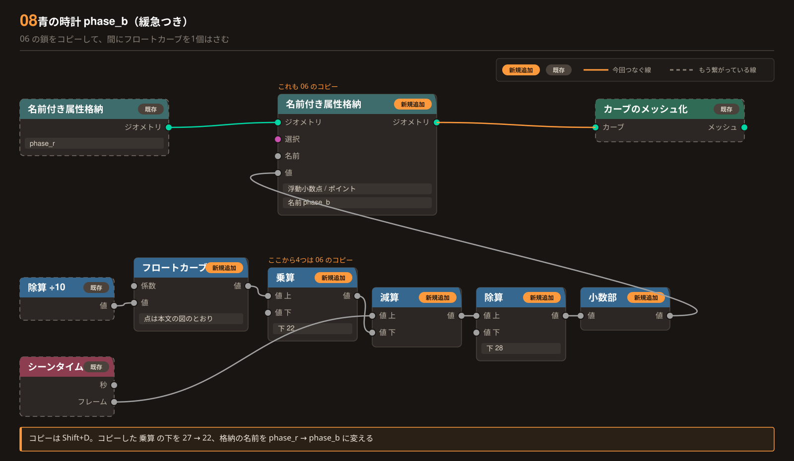
見た目は変わらなくて正解。
マテリアル
青の放射 → 新しい加算 上 ／ 赤の放射 → 新しい加算 下 ／ 新しい加算 → 05 の加算 上
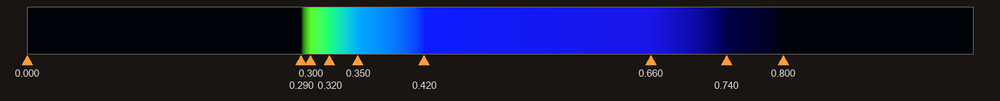
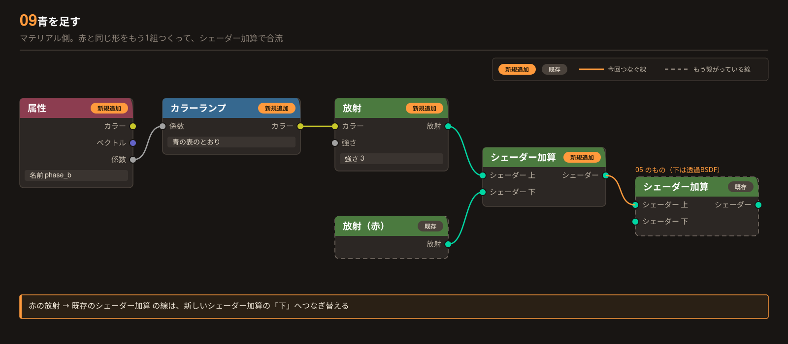
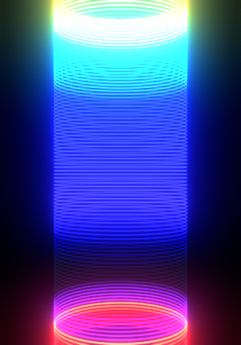
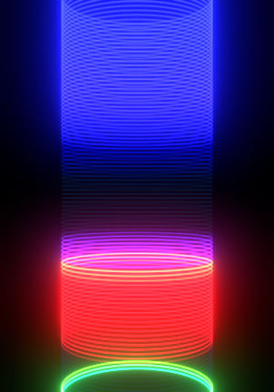
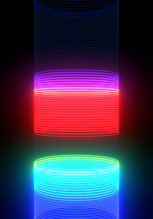
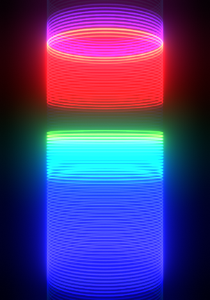
赤のあとから緑→青が昇り、上の方で赤に追いつく。
radial を焼き付ける位置 → 乗算 → 正規化 → 格納の 値 ／ 格納 phase_b → 格納 radial → カーブのメッシュ化Position → Multiply → Normalize → Store > Value / Store phase_b → Store radial → Curve to Mesh
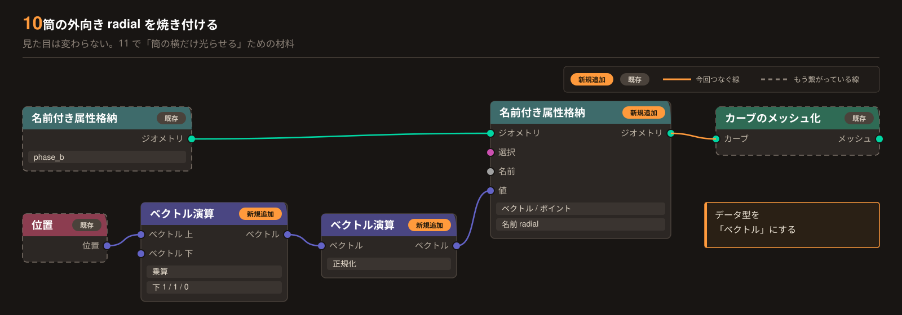
見た目は変わらなくて正解。
マテリアル
乗算 → 赤の放射 強さ（3 と打ってあった欄に線が入る）Multiply → Emission (red) Strength
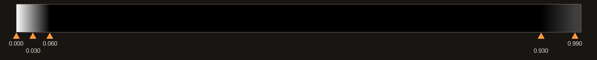
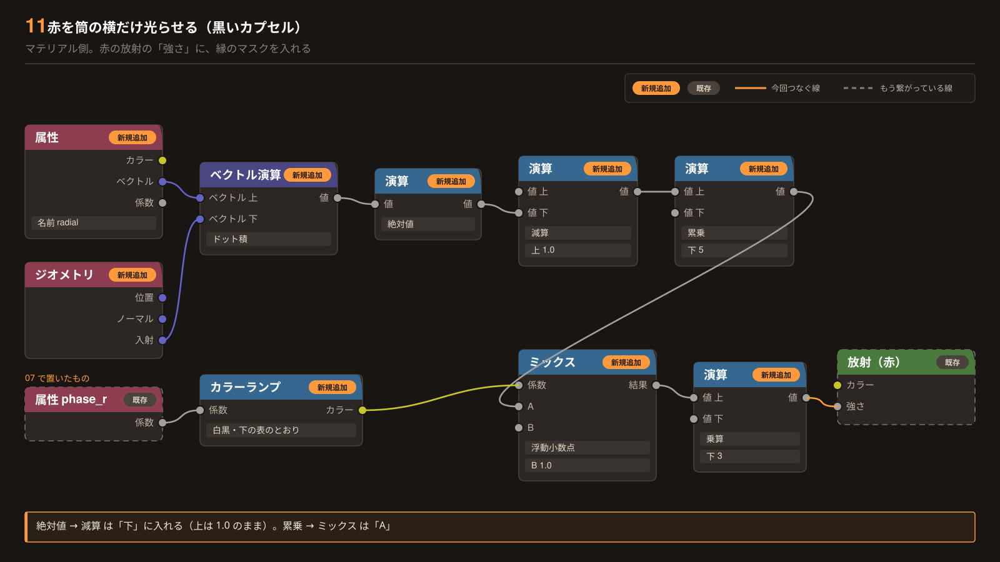
赤の帯の真ん中が暗く抜けて、縁だけ赤い筋が残る。09 と見比べると違いがわかる。
モディファイアが LightPower 以外に付いていないか。
ビューが レンダープレビューRendered か。属性ノードの名前のスペル（phase_r など）が格納と同じか。
04 の断面用カーブ円の半径が 0.018 か。02 のカーブ円をつないでいないか。
06 の 位置 → XYZ分離 の Z から線が出ているか。Position → Separate XYZ
絶対値 → 減算の 下、累乗 → ミックスの A につながっているか。Absolute → Subtract / Power → Mix